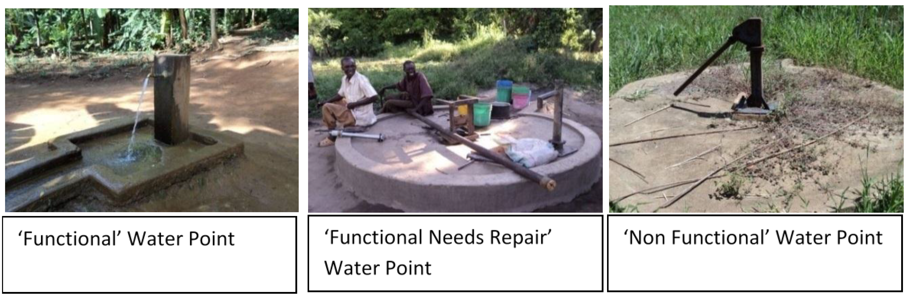

Packages
pacman::p_load(sf, tidyverse, tmap, spdep)Developing countries are most affected by water shortages and poor water quality. Up to 80% of illnesses in the developing world are linked to inadequate water and sanitation. Despite technological advancement, providing clean water to the rural community is still a major development issues in many countries globally, especially countries in the Africa continent.
To address the issue of providing clean and sustainable water supply to the rural community, a global Water Point Data Exchange (WPdx) project has been initiated. The main aim of this initiative is to collect water point related data from rural areas at the water point or small water scheme level and share the data via WPdx Data Repository, a cloud-based data library.

The main aim of the study is to understand the dynamics of spatial patterns of non-functional water points in Nigeria and its diffusion over spatial boundaries by applying appropriate global and local measures of spatial association techniques.

Some of the important steps performed in this study are as follows
Importing shapefile into R using sf package.
Deriving the proportion of functional and non-functional water point at LGA level using appropriate tidyr and dplyr methods.
Combining the geospatial and aspatial data frame into simple feature data frame.
Performing outliers/clusters analysis by using appropriate local measures of spatial association methods.
Performing hotspot areas analysis by using appropriate local measures of spatial association methods.
Thematic Mapping - Plotting maps to show the spatial distribution of functional and non-functional water point rate at LGA level by using appropriate thematic mapping technique provided by tmap package
Analytical Mapping - Plotting hotspot areas and outliers/clusters maps of functional and non-functional water point rate at LGA level by using appropriate thematic mapping technique provided by tmap package
For this study, data from WPdx Global Data Repositories and geoBoundaries are used. Both are in geospatial format. These dataset provide information about waterpoints and Nigeria’s Administrative boundary shape file.
| Data Type | Description | Source |
|---|---|---|
| Geospatial | Nigeria Level-2 Administrative Boundary | Geoboundaries |
| Geospatial | Water point related data on WPdx standard | Waterpoint access data |
Let us try to understand the dynamics of spatial patterns of non-functional water points in Nigeria and its diffusion over spatial boundaries using appropriate global and local measures of spatial association techniques.
Let us first load required packages into R environment. p_load function pf pacman package is used to install and load sf and tidyverse pacagkes into R environment.
pacman::p_load(sf, tidyverse, tmap, spdep)Now let us import both the geospatial data. The code chunk below uses st_read() function of sf package to import geoBoundaries-NGA-ADM2_simplified shapefile and geo_export into R environment.
Two arguments are used :
dsn - destination : to define the data path
layer - to provide the shapefile name
waterpts <- st_read(dsn = "data/aspatial",
layer = "geo_export",
crs = 4326) %>%
filter(clean_coun == "Nigeria")
nigeria <- st_read(dsn = "data/geospatial",
layer = "geoBoundaries-NGA-ADM2",
crs = 4326)st_read() of sf package is used to import geo_export and geoBoundaries-NGA-ADM2_simplified shapefile into R environment and save the imported geospatial data into simple feature data table.
filter() of dplyr package is used to extract water point records of Nigeria.
In order to reduce the file size let us save the data in .rds format.
write_rds(waterpts, "data/wp_nga.rds")write_rds() of readr package is used to save the extracted sf data table into an output file in rds data format.
Let us now preprocess the data before performing any analysis
Here, we are recoding the NA values into Unknown. In the code chunk below, replace_na() is used to recode all the NA values in status_cle field into Unknown.
wp_nga <- read_rds("data/wp_nga.rds") %>%
mutate(status_cle = replace_na(status_cle, "Unknown"))As our objective is to focus on waterpoints, let us extract the three types and save it as a dataframe for further analysis
wpt_functional <- wp_nga %>%
filter(status_cle %in%
c("Functional",
"Functional but not in use",
"Functional but needs repair"))
wpt_nonfunctional <- wp_nga %>%
filter(status_cle %in%
c("Abandoned/Decommissioned",
"Abandoned",
"Non-Functional",
"Non functional due to dry season",
"Non-Functional due to dry season"))
wpt_unknown <- wp_nga %>%
filter(status_cle == "Unknown")In the code chunk above, filter() of dplyr is used to select the specific water points.
We have to perform 2 steps to calculate the total number of functional, non-functional and Unknown waterpoints in each division.
Let us identify no. of waterpoints located inside each division by using st_intersects().
Next, let us calculate numbers of pre-schools that fall inside each planning subzone by using length() function.
nga_wp <- nigeria %>%
mutate(`total wpt` = lengths(
st_intersects(nigeria, wp_nga))) %>%
mutate(`wpt functional` = lengths(
st_intersects(nigeria, wpt_functional))) %>%
mutate(`wpt non-functional` = lengths(
st_intersects(nigeria, wpt_nonfunctional))) %>%
mutate(`wpt unknown` = lengths(
st_intersects(nigeria, wpt_unknown)))Now, let us calculate what is the overall proportion of functional and non-functional waterpoints by dividing the no. of functional waterpoints by the total no. of waterpoints. Similarly, for non-functional waterpoint proportion, numerator is replaced by non-functional waterpoint.
nga_wp <- nga_wp %>%
mutate(pct_functional = `wpt functional`/`total wpt`) %>%
mutate(`pct_non-functional` = `wpt non-functional`/`total wpt`)